Tema 04 - Sistemas operativos: base de la seguridad informática1. Seguridad en sistemas operativos🪟 Windows🐧 Linux2. Recomendaciones generales de uso seguro3. Configuración básica de seguridad🪟 Windows🐧 Linux4. Usuarios y grupos🪟 Windows🐧 Linux🧪 Práctica: crear y eliminar un usuario en Linux5. Permisos y atributos de archivos🪟 Windows🐧 LinuxInterpretar permisosCambiar permisos🔣Formato simbólico🧪Práctica: permisos en Linux🔢Formato numérico🧪 Práctica: crear y ejecutar un scriptConclusiónCambiar propietario y grupoPermisos especialesSetUIDSetGIDSticky Bit6. Seguridad en servicios y procesos🪟 Windows🧪 Práctica: detener servicios en Windows🐧 Linux🧪 Práctica: detener servicios en Linux7. Instalación de software en Windows y Linux🪟 Windows🐧 Linux🧪 Práctica: buscar e instalar una herramienta desde los repositorios oficiales8. Herramientas integradas de protección🪟 Windows🧪 Práctica: creando un virus en Windows🦠🐧 Linux8.1 GUFW – Interfaz gráfica del cortafuegos🧪 Práctica: bloquear temporalmente el tráfico con GUFW8.2 ClamAV – Antivirus bajo demanda🧪 Práctica: creando un virus en Linux 🦠Extra: Añadir una GUI a ClamAV9. Buenas prácticas de mantenimiento🪟 Windows🐧 LinuxResumen de comandos 🧩 Conclusión🧪 Test de repaso
¿Quién protege al protector? Aquí hablamos del sistema operativo, que es como el cerebro (o el mayordomo) que hace que todo funcione bien y seguro.
¿Qué vamos a ver en este tema?
Seguridad en sistemas operativos: Windows y Linux.
Configuración básica de seguridad.
Usuarios, grupos y permisos.
Seguridad en servicios y procesos.
Herramientas integradas de protección.
Buenas prácticas de mantenimiento.
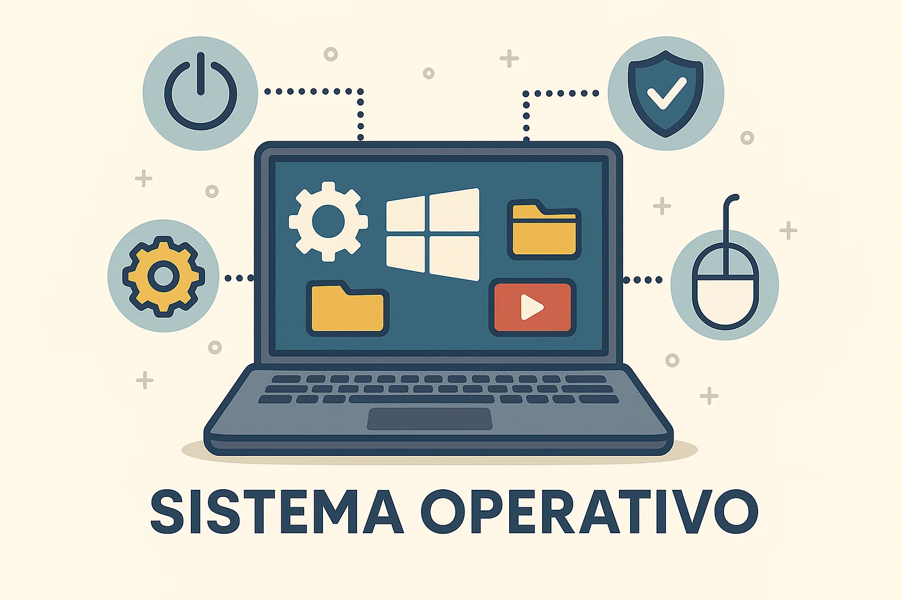
Los sistemas operativos son la base de cualquier dispositivo: gestionan recursos, permiten que el software funcione, y son el primer objetivo si alguien quiere comprometer un equipo. Por eso, mantener el sistema seguro no es una opción, ¡es una necesidad!
Important
Si el sistema operativo está comprometido, da igual cuántas herramientas de seguridad pongamos encima. Todo parte de aquí.
Los principales pilares de la seguridad en un sistema operativo son:
🔁Mantenerlo actualizado.
⚙️Configurarlo adecuadamente.
👮Limitar el acceso (usuarios, permisos).
📊Monitorizar servicios, procesos y cambios.
Veamos cómo se gestiona todo esto en los dos sistemas más comunes en el entorno laboral: Windows y Linux.
Es el sistema más utilizado en entornos corporativos y también el más atacado.
Es el más usado en sistemas domésticos.
Microsoft publica actualizaciones de seguridad regularmente (el famoso Patch Tuesday).
Incluye herramientas de seguridad integradas como Windows Defender, BitLocker, y el Firewall de Windows.
Soporta políticas de grupo para aplicar configuraciones de seguridad en redes empresariales.
Note
En entornos con Active Directory, la seguridad puede gestionarse de forma centralizada mediante directivas.
Muy usado en servidores y sistemas críticos. Su seguridad depende mucho de cómo se configure.
La mayoría de distribuciones publican actualizaciones constantes y permiten automatizar el proceso.
El sistema de permisos es muy granular, lo que permite un control preciso de accesos.
Existen herramientas avanzadas como AppArmor, SELinux o iptables que permiten endurecer el sistema.
Tip
En Linux, menos es más: mientras menos servicios estén activos, menos superficie de ataque hay.
Antes de entrar en configuraciones concretas, es fundamental adoptar una serie de hábitos y buenas prácticas que refuercen la seguridad del sistema operativo. Estas recomendaciones son válidas para cualquier sistema y servirán como base para todo lo que veremos en el curso.
🦸 Superusuario y sudo
En sistemas Linux, el superusuario (root) tiene control total sobre el sistema. Para evitar riesgos, no se trabaja directamente con esa cuenta. En su lugar, los usuarios normales pueden ejecutar tareas administrativas utilizando el comando sudo, que otorga privilegios elevados temporalmente.
Warning
Si algo se puede romper, probablemente suceda ejecutándolo con permisos de superusuario. Por eso solo se debe usar sudo cuando sea estrictamente necesario.
Tip
🤓La palabra sudo viene de “superuser do”, que significa literalmente “superusuario hace”.
🧑💻 No uses siempre la cuenta de administrador
Tanto en Windows como en Linux, usar una cuenta con privilegios elevados para tareas cotidianas es un riesgo. Si esa cuenta se ve comprometida, el daño puede ser total.
En Windows: crea una cuenta estándar y deja la cuenta de administrador solo para tareas puntuales.
En Linux: trabaja con tu usuario normal y usa sudo solo cuando realmente lo necesites.
Important
Si un malware se ejecuta con permisos de administrador o root... puede hacer literalmente cualquier cosa en el sistema.
🛑 ¡Atención importante para el alumnado! 🛑
Muchas de las configuraciones y acciones que explicamos en este tema sobre Windows no deben aplicarse directamente en los ordenadores del aula.
Por ejemplo, eliminar servicios del inicio o desactivar componentes del sistema puede afectar al funcionamiento del equipo y, si no se sabe bien qué se está haciendo, causar errores graves a estos y al trabajo de quién use estos ordenadores compartidos.
Este contenido tiene como objetivo enseñar lo que se debería hacer en un entorno real para mejorar la seguridad, pero solo debe aplicarse en máquinas virtuales o entornos de prueba.
¡No toques lo que no entiendas aún! Aprenderás a hacerlo, pero paso a paso y en el entorno correcto.
Un sistema recién instalado no siempre está configurado para ser seguro. La configuración por defecto suele priorizar la funcionalidad sobre la protección. Por eso, uno de los primeros pasos para asegurar un equipo es ajustar su configuración básica.
Las medidas mínimas de seguridad que deberíamos revisar en cualquier sistema operativo incluyen:
Desactivar servicios innecesarios.
Revisar los programas que se inician con el sistema.
Configurar el bloqueo de sesión tras un tiempo de inactividad.
Evitar el uso habitual de cuentas con privilegios de administrador.
Establecer contraseñas seguras y políticas de expiración.
Warning
Recuerda lo que hemos dicho en el punto anterior, no realizaremos ningún cambio a los equipos reales, solo a las máquinas virtuales.
Abre el Administrador de tareas con Ctrl + Shift + Esc. En Windows 11, haz clic en "Aplicaciones de arranque" desde el panel izquierdo para gestionar qué programas se ejecutan al iniciar el sistema.
Revisa y desinstala aplicaciones innecesarias desde:
Configuración → Aplicaciones → Aplicaciones instaladas.
Para desactivar servicios innecesarios:
Presiona Win + R, escribe services.msc y desactiva con cuidado solo los que no se usen.
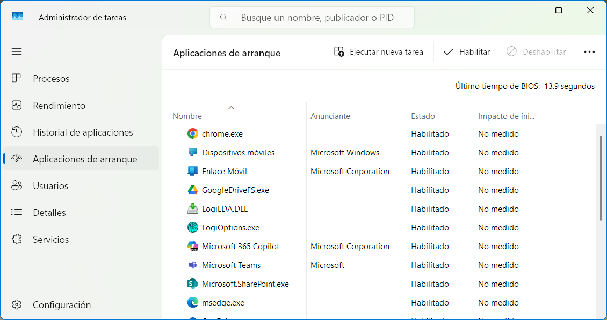
Tip
Hemos abierto cada punto de una forma distinta para ver otras opciones y aumentar la compatibilidad con versiones más antiguas de Windows.
Por ejemplo, los servicios se pueden también comprobar desde la pestaña de “Servicios” en el Administrador de tareas.
Las “aplicaciones de arranque” también se pueden ver en Configuración → Aplicaciones → Inicio.
Linux también requiere algunos ajustes básicos tras la instalación para reforzar su seguridad, aunque de serie suele venir bastante bien configurado.
Bloqueo automático de sesión:
Ve a Menú → Configuración → Gestor de energía.
En la pestaña Seguridad, activa la opción "Bloquear automáticamente la sesión cuando se active el salvapantallas".
Así, cuando el sistema apague la pantalla por inactividad (en la pestaña “Pantalla”, la sesión quedará protegida.
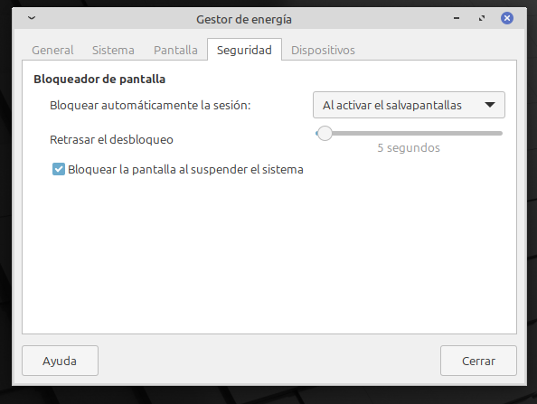
Aplicaciones al inicio:
Accede a Menú → Configuración → Sesión e inicio → Inicio automático de aplicaciones para ver qué programas se ejecutan automáticamente al iniciar el sistema. Desde ahí puedes activar o desactivar los que necesites.
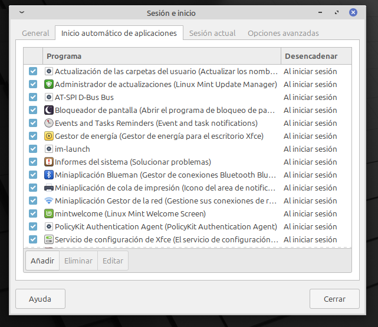
Gestión de procesos activos:
Abre el Gestor de tareas desde el menú. Es el equivalente al Administrador de tareas de Windows: permite ver procesos, uso de CPU y memoria, y finalizar tareas si es necesario.
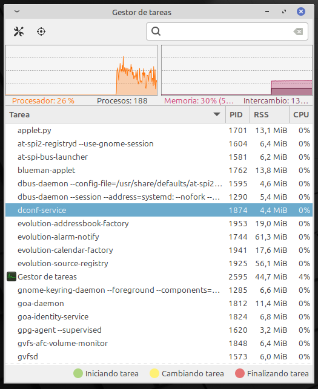
Servicios en segundo plano:
El sistema ejecuta tareas de fondo (daemons) aunque no se vean. Más adelante veremos cómo se revisan con herramientas como systemctl, pero por ahora basta con conocer su existencia.
Note
Todo esto lo veremos con calma en las prácticas. De momento, lo importante es saber qué partes del sistema se pueden controlar para reforzar su seguridad.
Una de las mejores formas de proteger un sistema es controlar quién puede hacer qué. Para eso existen los conceptos de usuarios y grupos, que permiten organizar el acceso al sistema y limitar privilegios.
Tip
Un sistema con una buena gestión de usuarios es mucho más seguro que uno donde todo el mundo tiene acceso a todo.
Usuarios → Personas o cuentas con acceso al sistema.
Grupos → Conjuntos de usuarios que comparten permisos comunes.
Windows permite crear distintos tipos de cuentas: administradores, usuarios estándar, invitados, etc.
Puedes gestionar las cuentas desde:
Configuración → Cuentas → Familia y otros usuarios
o desde el Panel de control → Cuentas de usuario.
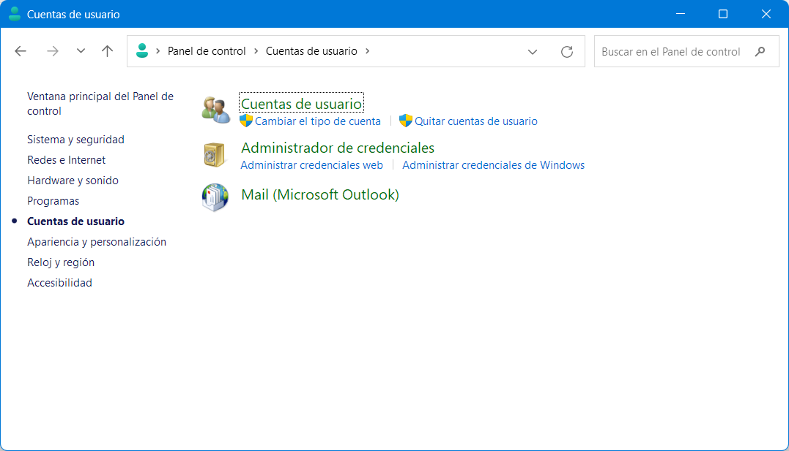 Cuentas de usuario">
También puedes ver o gestionar grupos desde:
Win + R → lusrmgr.msc (en ediciones Pro).
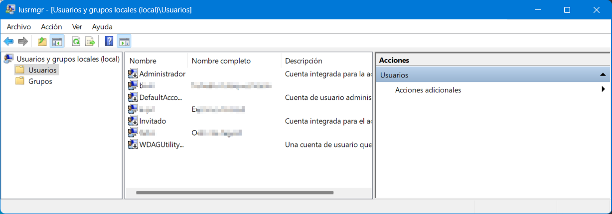
Botón derecho en Botón Inicio → Administrador de equipos
Note
En entornos profesionales, se suelen crear grupos como "Ventas", "Contabilidad", "TI" y se asignan permisos según el grupo al que pertenece el usuario.
En Usuarios nos muestra los usuarios del equipo, y si seleccionamos un usuario→ Botón derecho→ Propiedades, podemos:
Forzar a que el usuario cambie la contraseña en el próximo reinicio (por si la seguridad del equipo ha sido comprometida y queremos obligar a los usuarios a que cambien la contraseña).
Impedir que el usuario cambie la contraseña.
Que no expire (no tiene fecha de caducidad).
Deshabilitar la cuenta (ya no tendría acceso).
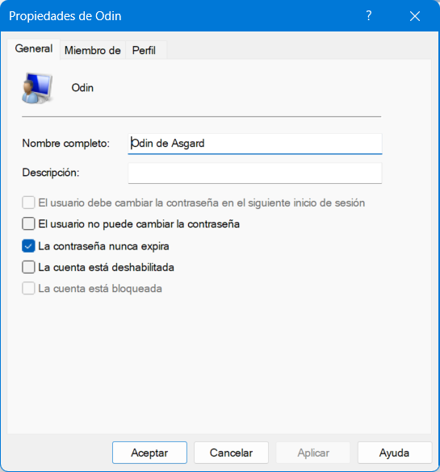
Note
Para cambiar la mayoría de opciones desde aquí, deberemos iniciar el programa con una cuenta con permisos de administrador.
Ver información de usuarios y grupos desde CLI con PowerShell
Note
PowerShell es una consola avanzada de Windows pensada para tareas de administración. Aunque veremos algún ejemplo aquí, este curso se centrará principalmente en el uso de la terminal en sistemas Linux, que es donde más partido sacaremos a los comandos.
Abriremos la terminal de PowerShell de Windows: Cuadro de búsqueda de Windows → Windows PowerShell.
x1# Muestra los usuarios del equipo2Get-LocalUser3
4# Muestra los grupos del equipo5Get-LocalGroup 6
7# Muestra los miembros (usuarios) de un grupo8Get-LocalGroupMember <nombre-grupo>9Get-LocalGroupMember Administratores
En Linux, cada usuario pertenece como mínimo a un grupo, y puede formar parte de varios. Esto permite organizar accesos a servicios o recursos comunes.
Ver el usuario actual:
xxxxxxxxxx11 whoamiVer los grupos del usuario actual:
xxxxxxxxxx11groups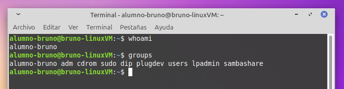
Esto significa que el usuario actual (alumno-bruno) pertenece a los siguientes grupos:
alumno-bruno → grupo principal (suele tener el mismo nombre que el usuario).
adm → acceso a algunos logs del sistema.
cdrom → permiso para usar unidades de CD/DVD.
sudo puede ejecutar comandos como superusuario con sudo.
dip, plugdev, lpadmin, sambashare → control de dispositivos, impresoras, recursos compartidos...
Crear un nuevo usuario:
xxxxxxxxxx11sudo adduser nombre_usuarioCrear un nuevo grupo:
xxxxxxxxxx11sudo addgroup nombre_grupoAñadir un usuario a un grupo existente:
xxxxxxxxxx11sudo usermod -aG nombre_grupo nombre_usuarioEliminar a un usuario de un grupo:
xxxxxxxxxx21# Se le reasignan todos los grupos de nuevo, excluyendo el grupo que queremos quitar2sudo usermod -G grupo1,grupo2,... nombre_usuarioTip
En la terminal de Linux, se pueden escribir comentarios usando la almohadilla al inicio (#). Esto hace que la línea de comandos ignore esa línea. Útil para en scripts.
También puedes gestionar usuarios gráficamente desde:
Menú → Configuración → Usuarios y grupos
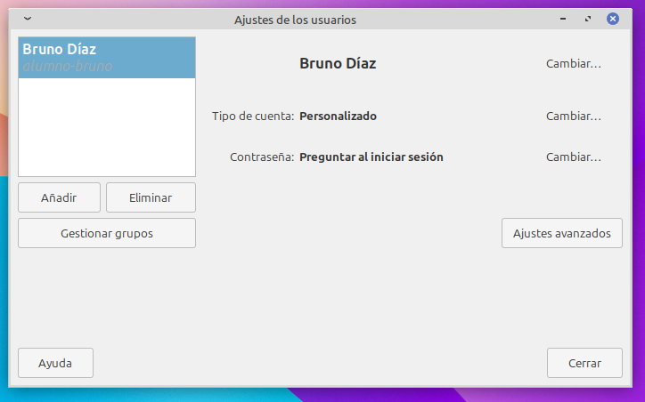
Objetivo: Aprender a crear un usuario nuevo desde la terminal y eliminarlo desde la interfaz gráfica.
1. Crear un nuevo usuario desde la terminal
Abre una terminal y escribe:
xxxxxxxxxx11sudo adduser maxpowerDurante el proceso te pedirá:
Contraseña de administrador para poder ejecutar un comando con sudo.
Contraseña para el nuevo usuario (2 veces)
Información opcional (puedes dejarla en blanco y pulsar Intro)
Confirmación de los datos
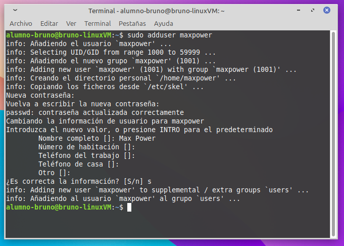
2. Verifica que el usuario se ha creado
Puedes comprobarlo con:
xxxxxxxxxx11cat /etc/passwd | grep maxpower3. Cambia de usuario y prueba acceder como ese nuevo usuario
Esto te permitirá comprobar que se ha creado correctamente y que tiene su propio entorno.
Menú de apagado → Cambiar de usuario
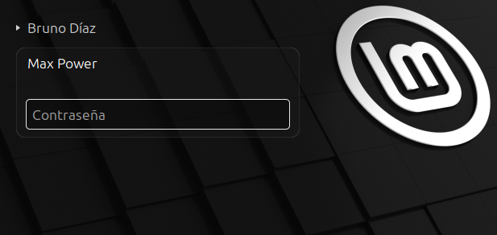
Important
Fíjate que ese usuario tendrá su propio espacio, archivos, configuración, aplicaciones, etc.
Cierra la sesión de Max Power y vuelve a tu usuario.
4. Eliminar el usuario desde la interfaz gráfica
Ya que lo hemos usado de ejemplo, vamos a eliminarlo.
Caution
Antes de eliminarlo, asegúrate que estás en la sesión de tu usuario y que la sesión del nuevo (Max Power) está cerrada. Si está logueado, el proceso puede fallar o dejar recursos bloqueados.
Ve a Menú → Configuración → Usuarios y grupos.
Selecciona el usuario Max Power.
Haz clic en Eliminar. Se pedirá la contraseña de superusuario (no la del usuario a borrar). Piensa sobre eso.
Marca la opción de eliminar también el directorio personal (si se ofrece).
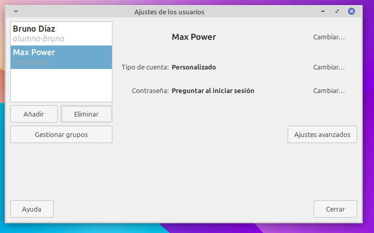
Warning
Asegúrate de no eliminar ningún usuario del sistema ni cuentas importantes. Solo haz esto con cuentas creadas para pruebas.
Note
🤓Para eliminar al usuario desde la terminal, deberíamos hacer:
xxxxxxxxxx51# Eliminar al usuario 'maxpower' dejando su carpeta personal 2sudo deluser maxpower3
4# Eliminar al usuario 'maxpower' y su carpeta personal incluida (/home/maxpower)5sudo deluser --remove-home maxpower
En cualquier sistema operativo es fundamental controlar quién puede acceder, modificar o ejecutar un archivo. Para eso existen los permisos. Estos se aplican tanto a archivos como a carpetas, y determinan lo que cada usuario o grupo puede hacer con ellos.
Tip
Una mala configuración de permisos puede exponer información sensible o permitir que cualquier usuario borre archivos importantes.
En Windows, los permisos se gestionan desde el entorno gráfico. Cada archivo o carpeta tiene una pestaña de Seguridad donde puedes ver y modificar quién tiene acceso y con qué privilegios.
Pasos para revisar o cambiar permisos:
Haz clic derecho sobre un archivo o carpeta → Propiedades
Ve a la pestaña Seguridad
Ahí verás los usuarios y grupos que tienen permisos sobre ese recurso
Puedes editar permisos como:
Leer
Escribir
Modificar
Control total
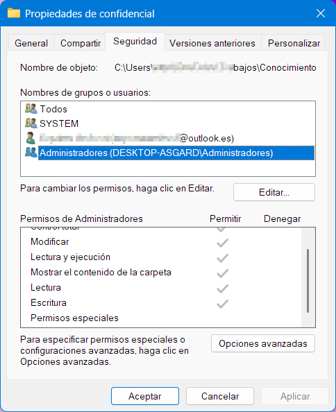
Note
Solo los usuarios con privilegios elevados (administrador) pueden cambiar permisos de archivos del sistema o de otros usuarios.
De aquí veremos:
Nombres de grupos o usuarios: Aquí nos muestra qué grupos o usuarios tienen permisos asignados a esta carpeta.
Permisos:
Lectura (Read): Te permite ver que el archivo existe y ver su contenido. Si es una carpeta, te permite ver el contenido de la carpeta.
Lectura y ejecución (Read & Execute): Incluye Lectura y además permite ejecutar el archivo si es un ejecutable (.exe, .com, etc.). Si se añade este permiso, se añadirá automáticamente Lectura.
Mostrar el contenido de la carpeta (List Folder Contents): Es un alias de Lectura y ejecución para una carpeta. Si se selecciona uno, se marcará el otro.
Escritura (Write): Permite hacer cambios al contenido del archivo o crear subcarpetas o modificarlas en caso de ser una carpeta.
Modificar (Modify): Es un permiso que incluye Lectura y ejecución y Escritura.
Control total (Full control): Con este permiso puede hacer lo que quiera sobre el archivo o carpeta sin restricción ninguna.
En Linux, los permisos están representados por tres letras para cada tipo de usuario:
u → usuario (propietario)
g → grupo
o → otros
Y tres tipos de permiso:
r → lectura
w → escritura
x → ejecución
Puedes ver los permisos con el comando:
xxxxxxxxxx11ls -lEjemplo de salida:
xxxxxxxxxx11-rwxrw-r-- 1 usuario grupo 1234 abr 18 10:00 documento.txtNos centraremos en los primeros caracteres que se ven -rwxrw-r--:
-: El primer guion indica que es un archivo normal. Si fuera un directorio, sería una d en lugar de -.
rwx: Los primeros 3 caracteres, son los permisos para el propietario del archivo (usuario en el ejemplo). Aquí tiene los 3 permisos read, write y execute.
rw-: Los siguientes 3 caracteres, son los permisos del grupo al que pertenece el archivo (grupo en el ejemplo). Aquí tiene sólo read y write. Los usuarios del grupo no pueden ejecutar execute el archivo.
r--: Los últimos 3 caracteres, son los permisos para todos los demás usuarios. Solo pueden leer read. No pueden escribir ni ejecutar.
Important
¿Tiene sentido dar permiso de ejecución a un archivo de texto?
En general, no. Un archivo de texto normal, como notas.txt, no necesita permiso de ejecución, ya que solo se usa para leer o escribir su contenido.
Sin embargo, si ese archivo contiene código (como un script de Bash, Python, etc.), entonces sí tiene sentido darle permiso de ejecución para poder lanzarlo directamente desde la terminal.
Por ejemplo, si creas un archivo llamado hola.sh con instrucciones de shell, al ejecutar chmod +x hola.sh podrás ejecutarlo con ./hola.sh.
El permiso de ejecución solo debe aplicarse a archivos que realmente lo necesiten. En otros casos, puede considerarse un exceso innecesario e incluso un riesgo si se aplica por error.
Para modificar permisos usamos el comando chmod. Se pueden cambiar de varias formas y aunque usaremos una, es importante que veamos las dos ya que es muy común encontrarlas ambas en documentación y aplicadas en sistemas.
xxxxxxxxxx11chmod
Primero, debemos escoger para quién vamos a cambiar los permisos:
u : El propietario (owner) (el primer trio de bits)
g : El grupo al que pertenece el archivo (el segundo trio)
o : Otros usuarios (el tercer trio)
Segundo, elegir si queremos añadir o quitar el permiso:
+ El símbolo suma determina que le agregamos el permiso.
- El símbolo resta determina que le denegamos el permiso.
Tercero, aplicar el trio de permisos sobre el archivo o carpeta:
xxxxxxxxxx251# Ejemplo de uso de chmod2ls -l miArchivoMolon.txt3
4# Ejemplo de salida (se añadió espacios a los permisos para poder visualizarlos mejor)5- -w- --- --- 1 manolo grupo_guay 0 Oct 12 13:23 miArchivoMolon.txt6
7# Ahora le añadimos permisos de ejecución para su propietario (manolo)8chmod u+x miArchivoMolon.txt9ls -l miArchivoMolon.txt10- -wx --- --- 1 manolo grupo_guay 0 Oct 12 13:23 miArchivoMolon.txt11
12# Y también podemos quitarle el permiso13chmod u-x miArchivoMolon.txt14ls -l miArchivoMolon.txt15- -w- --- --- 1 manolo grupo_guay 0 Oct 12 13:23 miArchivoMolon.txt16
17# Y así aplicamos varios permisos a la vez18chmod u+rx miArchivoMolon.txt19ls -l miArchivoMolon.txt20- rwx --- --- 1 manolo grupo_guay 0 Oct 12 13:23 miArchivoMolon.txt21
22# Y así le aplicamos los permisos a varios "trios" a la vez (owner, group y others)23chmod ugo+r miArchivoMolon.txt24ls -l miArchivoMolon.txt25- rwx r-- r-- 1 manolo grupo_guay 0 Oct 12 13:23 miArchivoMolon.txtEsta forma de aplicar permisos se denomina formato simbólico.
Objetivo: Crear un archivo y una carpeta desde el entorno gráfico, revisar y modificar sus permisos desde la terminal, y comprobar cómo afectan al acceso.
1. Crear archivo y carpeta desde el entorno gráfico (GUI)
Ve al Escritorio de Linux.
Haz clic derecho → Crear nueva carpeta → nómbrala prueba_permisos.
Entra en la carpeta y crea un archivo de texto:
Clic derecho → Crear nuevo documento → Archivo vacío
Nómbralo notas.txt
Ábrelo y escribe cualquier contenido, por ejemplo: "Esto es una prueba".´Guarda el contenido y cierra el editor.
2. Abrir la terminal y revisar los permisos
Abre una terminal.
Entra en la carpeta creada con cd ~/Escritorio/prueba_permisos.
Muestra los permisos del archivo con ls -l notas.txt.
Tip
Si en la interfaz haces Clic derecho sobre el fondo de una ventana → Abrir en un terminal, esto te abrirá una terminal en en esa ubicación, sin tener que moverte manualmente con el comando cd.
Deberías ver algo similar a:
xxxxxxxxxx11-rw-rw-r-- 1 tu_usuario tu_grupo 24 abr 20 10:15 notas.txt3. Probar acceso desde la terminal
Usa el comando cat notas.txt para intentar ver su contenido.
xxxxxxxxxx11cat notas.txtNote
El comando cat (concatenate) se utiliza para mostrar el contenido de archivos de texto en la terminal.
4. Quitar permiso de lectura al propietario
Ejecuta chmod u-r notas.txt para quitar el permiso de lectura.
Verifica el cambio con ls -l notas.txt.
Ahora verás algo como:
xxxxxxxxxx11--w-rw-r-- 1 tu_usuario tu_grupo 24 abr 20 10:15 notas.txt5. Probar acceso
Intenta ahora ver el contenido como hicimos antes desde la terminal con:
xxxxxxxxxx11cat notas.txtProbemos en la GUI, intenta abrir el archivo de texto con doble clic en notas.txt.
¿Qué pasa? No podemos acceder al archivo ni desde la terminal ni desde la GUI.
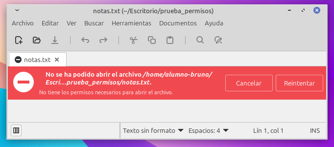
6. Recuperar el permiso
Para restaurar el permiso de lectura, ¿qué comando deberíamos introducir en la terminal? Piénsalo e inténtalo.
chmod u+r notas.txt
Además del formato simbólico, también puedes usar notación numérica para cambiar los permisos. A cada permiso se le asigna un valor numérico (como si fueran puntos):
r (lectura) = 4
w (escritura) = 2
x (ejecución) = 1
Para cada grupo (usuario, grupo, otros) sumamos los valores de los permisos deseados:
| Permisos | Valor | Explicación |
|---|---|---|
rwx | 7 | lectura (4) + escritura (2) + ejecución (1) |
rw- | 6 | lectura (4) + escritura (2) |
r-x | 5 | lectura (4) + ejecución (1) |
r-- | 4 | solo lectura (4) |
-wx | 3 | escritura (2) + ejecución (1) |
-w- | 2 | solo escritura (2) |
--x | 1 | solo ejecución (1) |
--- | 0 | sin permisos (0) |
Los permisos se expresan como un número de tres cifras, donde cada dígito representa los permisos para un tipo de usuario: el primero es para el propietario (u), el segundo para el grupo (g), y el tercero para los demás usuarios (o).
Note
Puede parecer que esto da lugar a confusión, pero no: cada número tiene una única interpretación posible. Es imposible que dos combinaciones distintas den el mismo valor.
Ejemplo:
xxxxxxxxxx11chmod 755 archivo.shEsto asigna los permisos:
Usuario: rwx → 7 (4+2+1)
Grupo: r-x → 5 (4+1)
Otros: r-x → 5 (4+1)
Es decir: el propietario puede leer, escribir y ejecutar; los demás solo leer y ejecutar.
Tip
Esta forma es muy útil cuando quieres aplicar un conjunto de permisos de una sola vez, especialmente en scripts o instrucciones breves.
Note
Ambas formas pueden parecer confusas al principio, pero es cuestión de acostumbrarse. Con la numérica una vez que te “aprendes” el valor de cada conjunto de permisos puede parecer más simple.
Más ejemplos:
xxxxxxxxxx141# Dar todos los permisos a todos (propietario, grupo, otros)2chmod 777 archivo.txt # rwx rwx rwx3
4# Permisos por defecto más comunes en archivos de texto5chmod 644 documento.txt # rw- r-- r--6
7# Solo el propietario puede leer y escribir8chmod 600 secreto.txt # rw- --- ---9
10# Solo lectura para el propietario11chmod 400 sololectura.txt # r-- --- ---12
13# Quitar todos los permisos a todos14chmod 000 bloqueado.txt # --- --- ---Objetivo: Comprobar cómo funciona el permiso de ejecución en un archivo de texto que contiene un script. Además usar la notación numérica para cambiar los permisos.
1. Crear el archivo desde el entorno gráfico (GUI)
Ve a la carpeta ~/Escritorio/prueba_permisos que hicimos antes.
Haz clic derecho → Crear nuevo documento → Archivo vacío
Nómbralo saludo.sh
Ábrelo con un editor de texto (doble clic)
Escribe el siguiente contenido (en dos líneas separadas), guarda y cierra el editor.
xxxxxxxxxx21echo "Hola mundo"
2. Intentar ejecutarlo sin permisos
Abre una terminal en esa carpeta (clic derecho → Abrir terminal aquí) y escribe:
xxxxxxxxxx11./saludo.shVerás un mensaje de error como: Permiso denegado.
Tip
Sería buena idea comprobar qué permisos exactos tiene ese archivo ¿verdad?
3. Darle permiso de ejecución con notación numérica
Ejecuta el siguiente comando:
xxxxxxxxxx11chmod 755 saludo.shEsto da permisos de lectura, escritura y ejecución al propietario, y lectura y ejecución al grupo y a otros.
Tip
¿Como sería con notación simbólica?
4. Ejecutar el script
Ahora vuelve a probar:
xxxxxxxxxx11./saludo.sh
Y verás en pantalla:
xxxxxxxxxx11Hola mundoNote
🤓¿Qué significan las líneas del script saludo.sh?
#!/bin/bash
Esta línea se llama shebang. Le indica al sistema que el archivo debe ejecutarse usando el intérprete de Bash (que se encuentra en /bin/bash). Es como decir: “usa Bash para entender lo que viene”.
echo "Hola mundo"
Este comando simplemente muestra por pantalla el texto "Hola mundo". Es una orden de prueba típica en los primeros scripts para confirmar que todo funciona.
Gracias a la primera línea, el sistema sabe qué hacer con el archivo al ejecutarlo. Si no la pones, puede que tengas que llamarlo manualmente con bash saludo.sh.
Note
¿chmod +x o chmod 755?
Ambos comandos pueden usarse para dar permisos de ejecución, pero funcionan de forma diferente:
chmod +x saludo.sh → Añade permiso de ejecución sin cambiar los demás permisos.
chmod 755 saludo.sh → Establece los permisos exactos: rwxr-xr-x, asegurando que:
El propietario puede leer, escribir y ejecutar.
El grupo y los demás usuarios pueden leer y ejecutar, pero no modificar.
Usar notación numérica es más preciso y asegura que el archivo tiene solo los permisos necesarios.
Además de los permisos, también se puede cambiar quién es el propietario de un archivo o carpeta, o a qué grupo pertenece. Esto se hace con el comando chown.
Sintaxis básica:
xxxxxxxxxx11sudo chown nuevo_usuario:nuevo_grupo archivoSi solo quieres cambiar el propietario:sudo chown juan documento.txt
Si quieres cambiar el grupo también (en el mismo comando):sudo chown juan:ventas documento.txt
Warning
Solo un usuario con permisos de administrador (o el propio propietario en algunos casos) puede cambiar la propiedad de un archivo.
¡Lo estamos repitiendo una y otra vez para que se te quede escrito a fuego !
Ver el propietario y grupo actual
Puedes comprobarlo con ls -l, por ejemplo:
xxxxxxxxxx11-rw-r--r-- 1 juan ventas 300 abr 20 10:00 documento.txtAquí vemos que el propietario es juan y el grupo es ventas.
Cambiar el propietario de una carpeta y su contenido
Si quieres aplicar el cambio a una carpeta y todos los archivos que contiene, añade -R para que sea recursivo:
xxxxxxxxxx11sudo chown -R juan:ventas carpeta_completaTip
Cambiar el propietario puede ser útil si copias archivos de otro usuario, o si quieres ceder el control de una carpeta compartida a otro miembro del grupo.
Aunque normalmente se trabaja con los permisos básicos de lectura, escritura y ejecución, existen también algunos permisos especiales que modifican el comportamiento de archivos o directorios en situaciones concretas. No es necesario dominarlos para usar el sistema con seguridad, pero dejamos aquí una referencia por si quieres profundizar más adelante.
A veces, puede pasar que queramos que un usuario pueda acceder a ciertos archivos, sin necesidad de darles permisos superuser. Para ello existe el permiso especial SetUID
Si le indicamos este permiso, un usuario puede ejecutar un archivo, usando el permiso del propietario. Ej: El usuario root es el propietario del archivo /etc/bin/passwd, pero queremos que el usuario maxpower pueda ejecutar este archivo usando el permiso del propietario, que es root.
xxxxxxxxxx21ls -l /usr/bin/passwd2- rws r-x r-x 1 root root 54256 May 16 19:37 /usr/bin/passwdVemos que hay una s donde debería haber una x. La s significa SetUID. Y el usuario actual puede ejecutar ese archivo usando los permisos del propietario, que es root.
Veamos como añadir ese permiso especial en nuestro ejemplo de antes:
xxxxxxxxxx51# Simbólicamente, es s2sudo chmod u+s miArchivoMolon.txt3
4# Numéricamente, es un 4, que va el primero del resto de permisos 5sudo chmod 4755 miArchivoMolon.txt
Igual que para los usuarios, se puede hacer con los grupos. Es decir, podemos ejecutar un archivo usando los permisos de grupo. Para añadir este permiso especial podemos:
xxxxxxxxxx31# El archivo /usr/bin/wall tiene activado el GID para el grupo 'tty'2ls -l /usr/bin/wall3- rwx r-s r-x 1 root tty 27368 Oct 12 13:23 /usr/bin/wallVemos como aplicarlo a nuestros archivos:
xxxxxxxxxx91# Simbolicamente, es g2sudo chmod g+s miArchivoMolon.txt3
4# Numéricamente, es 25sudo chmod 2755 miArchivoMolon.txt6
7# Comprobamos8ls -l miArchivoMolon.txt9- rwx r-s r-x 1 maxpower grupo_aburrido 0 Oct 12 13:23 miArchivoMolon.txtCuando alguien intente ejecutar este archivo, el mismo se ejecutará con los permisos del grupo grupo_aburrido, y no con los permisos que tenga el usuario que lo ejecuta.
Este permiso especial suele usarse en carpetas donde todo el mundo tiene acceso, y queremos que un usuario no pueda borrar archivos/carpetas de otro usuario, ya que todos tienen permiso de escritura. Suele usarse en las carpetas /tmp y /var/tmp.
xxxxxxxxxx31# Veamos los permisos de la carpeta /tmp (con d vemos solo el directorio y no su contenido)2ls -ld /tmp3d rwx rwx rwt 11 root root 4096 Oct 12 13:23 /tmpFíjate que tiene todos los permisos, y en el de ejecución para otros hay una t. Es el permiso especial de sticky (pegajoso). Significa que todos pueden agregar información (crear y modificar archivos y carpetas), pero solo root podrá borrar la carpeta /tmp.
Podemos agregar el permiso sticky bit de forma simbólica o numérica:
xxxxxxxxxx91# Simbólicamente2sudo chmod +t miCarpeta/3
4# Numéricamente5sudo chmod 1755 miCarpeta/6
7#Comprobamos...8ls -ld miCarpeta/9d rwx r-x rwt 11 maxpower grupo_aburrido 4096 Oct 12 13:23 miCarpeta/Note
🤓 Aquí podrás encontrar una explicación adicional a los permisos especiales, SetUID, SetGID y Sticky Bit. https://rm-rf.es/permisos-especiales-setuid-setgid-sticky-bit/
Un sistema operativo no solo ejecuta las aplicaciones que abrimos: también pone en marcha muchos procesos en segundo plano (servicios o "daemons") que realizan tareas automáticamente, como gestionar redes, imprimir, sincronizar la hora o actualizar el sistema.
Aunque muchos de estos servicios son necesarios, algunos pueden ser innecesarios o incluso suponer un riesgo si se mantienen activos sin control. Por eso es importante saber:
Qué procesos se están ejecutando
Qué servicios arrancan automáticamente al iniciar
Cuáles se pueden desactivar de forma segura
Important
Cuantos más servicios innecesarios estén activos, mayor es la superficie de ataque. Desactivar lo que no se usa es una buena práctica de seguridad.
En Windows, los servicios del sistema se pueden gestionar desde una herramienta llamada Servicios, donde puedes ver su estado y configurarlos para que se inicien (o no) con el sistema.
Abrir la herramienta de servicios:
Pulsa Win + R → escribe services.msc y pulsa Intro
También puedes buscar “Servicios” desde el menú de inicio.
O la pestaña “Servicios” desde el administrador de tareas (Control + Mayús + ESC).
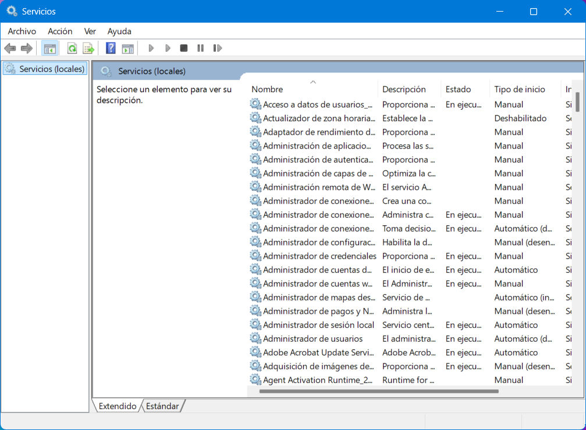
Una vez dentro, puedes:
Ver la lista completa de servicios
Ver su estado (en ejecución, detenido, etc.)
Cambiar su tipo de inicio:
Automático: se inicia al arrancar Windows
Manual: solo se inicia si una aplicación lo necesita
Deshabilitado: no se ejecuta
Note
Solo deberías desactivar servicios si sabes para qué sirven. Algunos están relacionados con la red, impresoras, actualizaciones o seguridad. Mejor no tocarlos si no lo tienes claro.
Objetivo: Localizar un servicio del sistema, detenerlo temporalmente, comprobar su efecto, y volver a iniciarlo.
Servicio usado: Cola de impresión
(Este servicio se encarga de gestionar la impresión. Si no hay impresoras instaladas, es seguro detenerlo).
1. Abrir la herramienta de servicios
Pulsa Win, escribe “Servicios” y haz clic derecho sobre el resultado → Ejecutar como administrador
También puedes pulsar Win + R, escribir services.msc, y luego pulsar Ctrl + Shift + Intro para abrirlo con privilegios elevados
Busca en la lista el servicio llamado Cola de impresión
Haz doble clic para abrir sus propiedades
2. Revisar su estado actual
Verifica que el estado del servicio sea En ejecución
El tipo de inicio suele ser Automático
3. Detener el servicio
Haz clic en el botón Detener
Pulsa Aplicar y luego Aceptar
4. Comprobar el efecto
Abre el panel de impresoras (Inicio → Configuración → Dispositivos → Impresoras y escáneres)
Aunque no tengas impresoras físicas conectadas, lo más seguro es que tengas algunas virtuales, como Microsoft Print to PDF o similares.
Verás que las impresoras desaparecen o muestran un estado de error
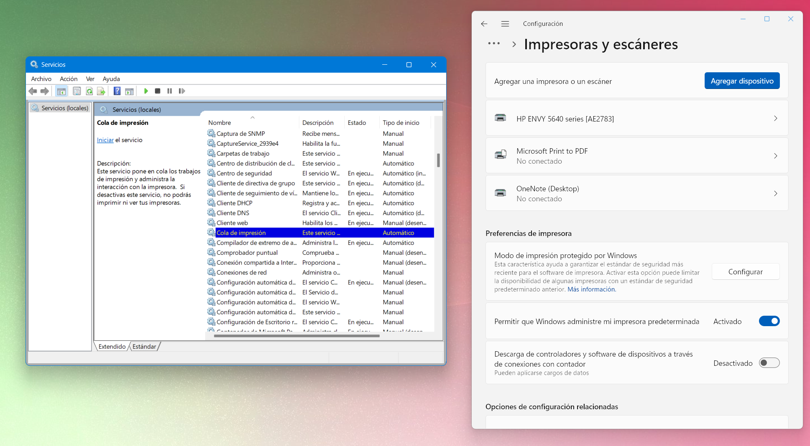
Note
Si no tienes ninguna impresora instalada, el panel puede quedarse en blanco. Esto es normal y significa que el servicio fue detenido correctamente.
5. Reiniciar el servicio
Vuelve a la ventana del servicio Cola de impresión
Haz clic en Iniciar
Confirma que las impresoras vuelven a aparecer o se restablecen
Tip
Esta es una forma habitual de solucionar problemas con impresoras que no responden. Reiniciar el servicio "Cola de impresión" puede arreglar muchos errores de forma rápida.
En Linux, los servicios se conocen como daemons y se gestionan principalmente a través de systemd, que es el sistema de inicio más usado actualmente.
Para ver administrar los servicios en Linux se suele usar el comando:
xxxxxxxxxx11systemctlEste comando genera múltiples líneas en la terminal y hay que tener en cuenta lo siguiente antes de seguir adelante:
Caution
¿Qué pasa cuando un comando ocupa varias líneas o se abre algo dentro de la terminal?
A veces, al ejecutar un comando largo (como systemctl status o less), la terminal entra en un modo de lectura que no permite escribir comandos directamente.
Si ves que no puedes escribir, probablemente estás dentro de un visor o en una salida paginada (como less).
Algunas teclas útiles:
Espacio: pasar página hacia abajo
Q: salir y volver a la terminal normal
Flechas ↑↓: desplazarte por el contenido
👉 ¡No te asustes si “se queda pillado”! Solo pulsa Q para volver.
Comandos básicos con systemctl:
Ver todos los servicios activos:
xxxxxxxxxx11systemctl list-units --type=service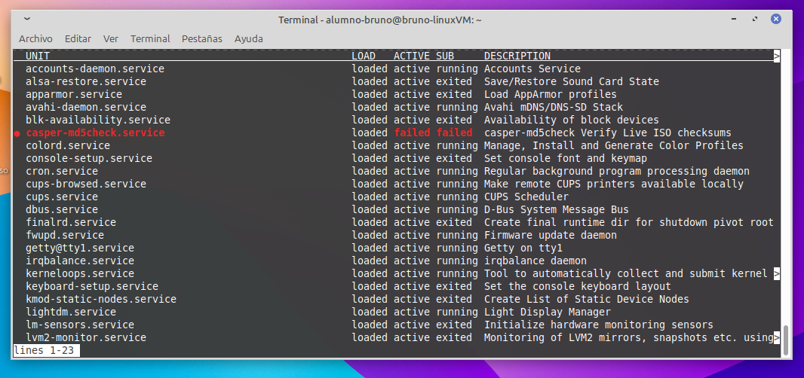
Ver el estado de un servicio específico:
xxxxxxxxxx11systemctl status nombre_del_servicioDesactivar un servicio para que no se inicie al arrancar:
xxxxxxxxxx11sudo systemctl disable nombre_del_servicioDetener un servicio en este momento:
xxxxxxxxxx11sudo systemctl stop nombre_del_servicioTip
Puedes combinar stop y disable para detener un servicio ahora y evitar que se inicie en el futuro.
Ejemplo:
Si no quieres que el servicio de bluetooth se active:
xxxxxxxxxx21sudo systemctl stop bluetooth.service2sudo systemctl disable bluetooth.service
Note
En Mint XFCE puedes consultar los servicios también desde el Gestor de tareas, pero para una gestión más precisa lo ideal es usar la terminal.
Objetivo: Aprender a localizar un servicio importante, detenerlo, comprobar su efecto inmediato en el sistema y volver a activarlo.
1. Comprobar que tienes red antes de empezar
Abre tu navegador y asegúrate de que tienes conexión a internet.
Comprueba también que aparece el icono de red en el panel inferior.
2. Verificar el estado del servicio de red
xxxxxxxxxx11systemctl status NetworkManagerVerás que está activo y funcionando.
Usa Q para salir de la vista.
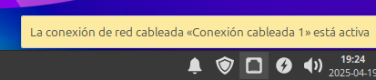
3. Detener el servicio de red
xxxxxxxxxx11sudo systemctl stop NetworkManagerEspera unos segundos. El icono de red debería cambiar a “sin conexión” o mostrar “cable de red desconectado”.
Intenta abrir una página web para confirmar que no tienes conexión.
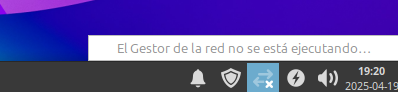
4. Volver a activar el servicio de red
xxxxxxxxxx11sudo systemctl start NetworkManagerEn pocos segundos deberías recuperar el icono de red activa.
Prueba a navegar o hacer ping para comprobar que vuelve a estar conectada.
5. (Opcional) Ver si está habilitado al arranque
xxxxxxxxxx11systemctl is-enabled NetworkManagerSi pone enabled, significa que se ejecutará automáticamente al iniciar el sistema.
Important
🤓¿Por qué puede que aún tengas internet tras detener el servicio?
Si estás usando Linux en una máquina virtual (como VMware o VirtualBox), es posible que la conexión de red siga funcionando incluso tras detener NetworkManager. Esto ocurre porque el entorno de virtualización puede mantener activa la red a nivel de adaptador.
Si quieres cortar la conexión completamente, puedes hacerlo bajando manualmente la interfaz de red desde la terminal:
xxxxxxxxxx11sudo ip link set enp0s3 downY para volver a conectarla:
xxxxxxxxxx11sudo ip link set enp0s3 upSustituye enp0s3 por el nombre de tu interfaz, que puedes encontrar ejecutando ip a.
Pero recuerda, lo que queríamos era probar los servicios, no bajar y subir interfaces.
Antes de continuar explorando herramientas integradas de protección, es importante entender cómo se instala nuevo software de forma segura en cada sistema operativo. No siempre es necesario buscar archivos en páginas web: tanto Windows como Linux tienen formas oficiales y controladas de instalar programas.
En Windows, además de los instaladores clásicos .exe o .msi, existe una tienda oficial llamada Microsoft Store, desde la cual se pueden descargar muchas aplicaciones de forma segura.
¿Cómo abrir la Microsoft Store?
Pulsa Win y escribe “Microsoft Store”
O haz clic en su icono desde el menú de inicio
Aquí puedes buscar programas como antivirus, navegadores, utilidades, etc. La instalación es sencilla: solo hay que hacer clic en “Obtener” y se instalarán automáticamente.
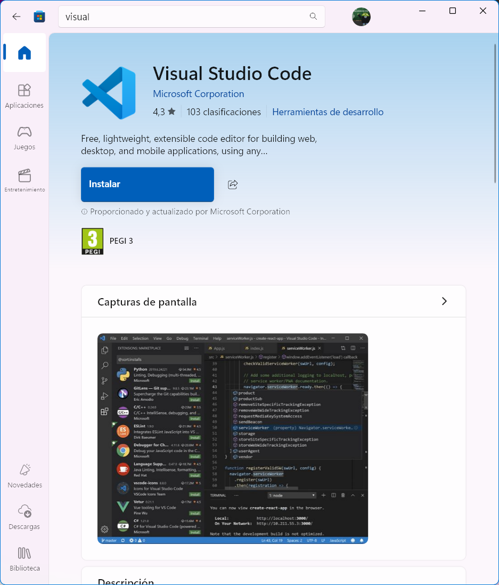
Note
No todo el software está en la tienda, pero para muchas tareas básicas es una opción segura y rápida que evita buscar instaladores dudosos por internet.
En Linux, el software se instala principalmente desde los repositorios oficiales, que son como tiendas centralizadas controladas por la distribución.
Para instalar programas desde la terminal se usa el siguiente comando:
xxxxxxxxxx11sudo apt install nombre_del_paquete¿Qué significa esto?
apt es el gestor de paquetes en distribuciones basadas en Debian, como Linux Mint o Ubuntu
install indica que quieres instalar algo
nombre_del_paquete es el nombre exacto del programa (cada programa tiene un nombre único identificativo)
sudo se usa para obtener permisos de administrador (como ya deberías de saber )
Ejemplo:
xxxxxxxxxx11sudo apt install vlcWarning
No es necesario descargar nada desde internet: el sistema buscará automáticamente el paquete, lo descargará y lo instalará desde sus servidores oficiales.
¿Y si quiero desinstalar un programa?
También puedes eliminar un programa que hayas instalado con:
xxxxxxxxxx11sudo apt remove nombre_del_paqueteEjemplo:
xxxxxxxxxx11sudo apt remove vlc
Tip
Este comando desinstala el programa, pero deja sus archivos de configuración. Si quieres borrarlo todo por completo, puedes usar sudo apt purge en lugar de remove.
Otras formas de instalar software en Linux Mint:
Desde el Gestor de software (accesible desde el menú)
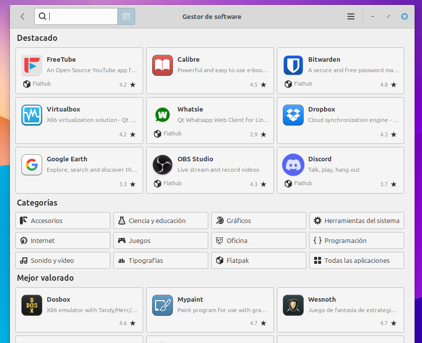
Tip
A diferencia de Windows, en Linux se prioriza la instalación desde repositorios. Esto evita problemas con archivos inseguros o versiones incompatibles.
Objetivo: Instalar un programa desde terminal, buscando tú mismo el comando correcto.
Herramienta propuesta: ClamAV (antivirus de código abierto)
Abre tu navegador y busca:"clamav linux mint instalar"
(o algo similar)
Encuentra el comando correcto para instalar ClamAV desde los repositorios oficiales (no descargues .deb ni archivos externos).
Abre la terminal e instala el paquete el comando necesario.
Comprueba que está instalado con:
xxxxxxxxxx11clamscan --versionNote
En el siguiente punto veremos cómo usar ClamAV para analizar carpetas o archivos sospechosos. Además de como instalarle una GUI.
Tip
En Linux, lo más seguro es instalar desde los repositorios oficiales. Busca el nombre del programa + tu distribución y suele aparecer el comando correcto.
El comando para instalar ClamAV desde los repositorios oficiales es:
xxxxxxxxxx11sudo apt install clamav
Los sistemas operativos actuales incluyen herramientas diseñadas para proteger al usuario incluso sin tener conocimientos técnicos. Algunas vienen activadas por defecto, otras se pueden añadir fácilmente. Ya vimos muchas de ellas en temas anteriores, pero aquí haremos un repaso en bloque, centrándonos especialmente en Linux.
Note
Estas herramientas ya se explicaron en el Tema 3. Aquí solo las enumeramos como recordatorio.
Windows Defender – Antivirus en tiempo real integrado.
Firewall de Windows – Controla las conexiones entrantes y salientes.
Control de aplicaciones y navegador – Bloquea contenido y archivos sospechosos.
Protección contra ransomware – Limita el acceso a carpetas importantes.
Windows Update – Aplica actualizaciones de seguridad automáticamente.
Todas estas funciones están centralizadas en la app Seguridad de Windows.
Objetivo: Simular un archivo malicioso (sin peligro real) y comprobar si el antivirus de Windows lo detecta correctamente.
Tip
Este texto no contiene ningún virus real. Es una prueba oficial (EICAR) reconocida por todos los antivirus. Después lo probaremos también en Linux.
1. Crear el archivo
Pulsa Win, escribe “Bloc de notas” y ábrelo.
Copia y pega la línea siguiente:
xxxxxxxxxx11X5O!P%@AP[4\PZX54(P^)7CC)7}$EICAR-STANDARD-ANTIVIRUS-TEST-FILE!$H+H*
Guarda el archivo y llámalo leeme.txt y guárdalo en el Escritorio.
Note
Si todo está funcionando bien, el archivo será eliminado al instante o movido a cuarentena.
Si no lo detecta, puedes forzar que Windows Defender lo escanee haciendo clic derecho sobre el archivo > 🛡️Examinar con Defender o haciendo un análisis rápido.
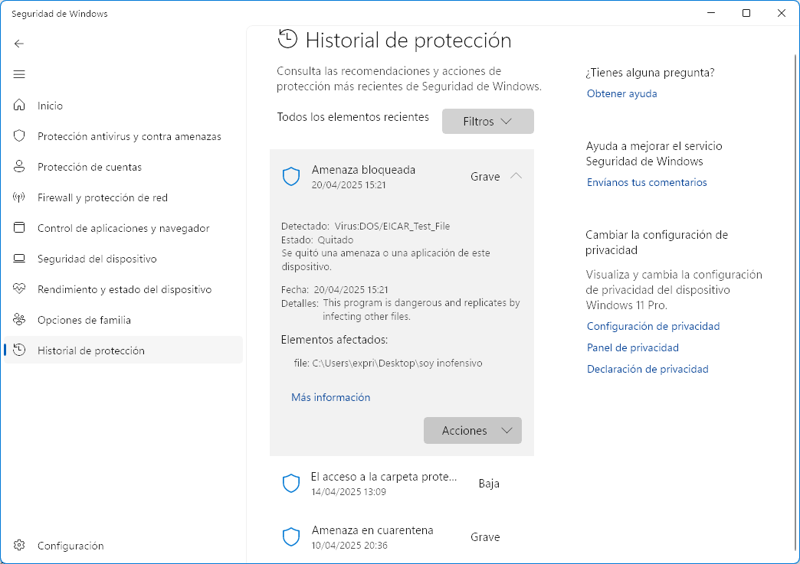
Caution
No intentes subir este archivo a Google Drive o enviarlo por correo: muchos servicios lo bloquearán automáticamente aunque no sea peligroso.
Linux también cuenta con herramientas que pueden reforzar la seguridad del sistema. Algunas vienen instaladas, otras pueden añadirse fácilmente desde los repositorios, como vimos en el punto anterior.
iptables o nftables son herramientas potentes pero complejas. GUFW proporciona una forma visual de gestionar el cortafuegos.
¿Cómo abrirlo?
Busca “Firewall” en el menú
Si no aparece, instálalo con:
xxxxxxxxxx11sudo apt install gufw
¿Qué permite hacer GUFW?
Activar/desactivar el firewall con un clic
Elegir perfiles de red (Casa, Oficina, Público)
Añadir reglas para permitir o bloquear programas, puertos o direcciones IP
Tip
GUFW es ideal para aprender a gestionar el firewall sin tocar la terminal. Suele venir preinstalado en Linux Mint XFCE, pero no siempre visible por defecto.
Objetivo: Evitar el acceso a páginas web bloqueando los protocolos HTTP y HTTPS de forma sencilla y comprensible.
1. Abrir GUFW
Busca “Firewall” o “GUFW” en el menú de inicio.
Asegúrate de que el cortafuegos esté activado (botón "Estado" arriba a la izquierda).
2. Añadir una regla para bloquear HTTP y HTTPS
Ve a la pestaña Reglas y pulsa en + (Añadir).
En la ventana que se abre, selecciona la pestaña Preconfigurada.
Rellena los campos así:
Política: Denegar
Dirección: Ambos
Categoría: Red
Subcategoría: Servicios
Servicio: Servidor web (HTTP, HTTPS)
Haz clic en Añadir.
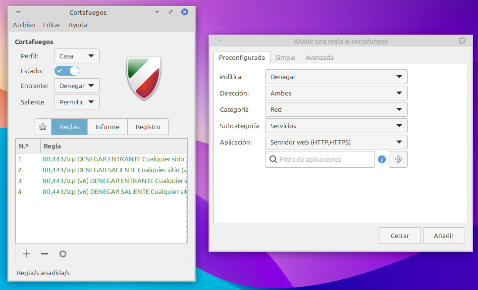
3. Comprobar el resultado
Abre tu navegador e intenta acceder a cualquier página web.
Verás que no se carga ninguna, ni siquiera páginas https como google.com.
Por otro lado, comprueba que funciona un ping a la página que estás probando:
xxxxxxxxxx11ping google.comPara detener el envío de señales ping, pulsa Control + c.
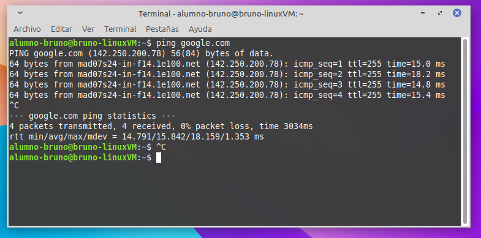
Note
Si alguna web carga, comprueba que las reglas están activas y bien definidas. En algunos casos el navegador puede mostrar una página en caché.
4. Desactiva el firewall temporalmente.
En la ventana del firewall, pulsa el botón de Estado para apagarlo. Puede tardar unos segundos en responder. Se paciente.
Cuando el firewall está apagado, volverás a tener conexión. Compruébalo.
Vuelve a habilitarlo para dejarlo encendido.
5. Eliminar las reglas para recuperar la conexión
En la pestaña Reglas, selecciona las reglas de HTTP y HTTPS que creaste.
Pulsa el icono de ➖ (menos) para eliminarlas.
Una vez que elimines las reglas del firewall, el navegador volverá a tener conexión y mostrará las páginas.
Caution
Fíjate que todos los eventos han quedado registrado en la pestaña de Registro, y pueden ser revisados por un administrador. Todo deja huella.
Tip
Esta práctica demuestra cómo un firewall puede bloquear tipos de tráfico conocidos, sin necesidad de saber el número de puerto que usan.
Linux no requiere antivirus activo en la mayoría de entornos, pero ClamAV es útil si recibes archivos de otras personas o usas memorias USB.
Instalación:
Ya deberíamos tener ClamAV instalado de la práctica de antes. Si no, puedes instalarlo así:
xxxxxxxxxx11sudo apt install clamavComprobar instalación:
xxxxxxxxxx11clamscan --versionDebería salir algo parecido a:
xxxxxxxxxx11ClamAV 1.0.8
Analizar una carpeta:
xxxxxxxxxx11clamscan -r ~/DescargasCon esto escanearía la carpeta ~/Descargas
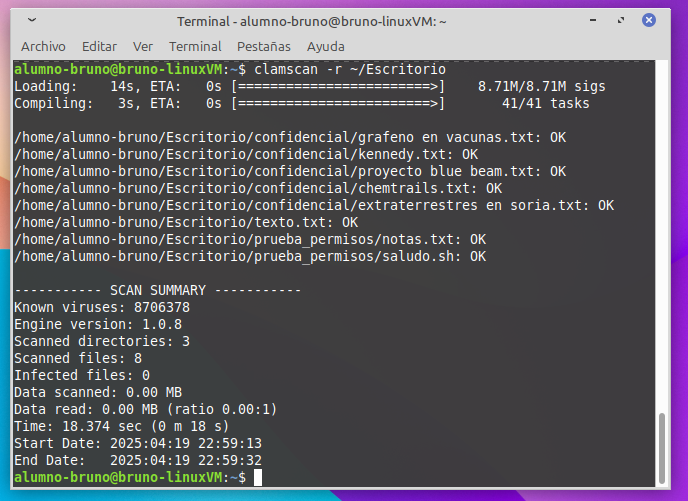
Note
ClamAV no analiza en tiempo real (por ahora). Solo escanea cuando tú se lo indicas desde terminal o mediante tareas programadas.
Objetivo: Simular un archivo malicioso (sin peligro real) y comprobar si el antivirus ClamAV lo detecta correctamente.
1. Crear el archivo desde un editor de texto
Abre un editor de texto gráfico (por ejemplo, Mousepad, Xed, o el que tengas en Mint).
Copia exactamente esta línea de texto y pégala tal cual:
xxxxxxxxxx11X5O!P%@AP[4\PZX54(P^)7CC)7}$EICAR-STANDARD-ANTIVIRUS-TEST-FILE!$H+H*
Guarda el archivo como eicar.txt en tu carpeta Descargas.
🤓 Opción alternativa: crear el archivo desde la terminal
Si prefieres hacerlo desde la consola (la consola siempre mola mucho más), puedes usar este comando:
xxxxxxxxxx11echo 'X5O!P%@AP[4\PZX54(P^)7CC)7}$EICAR-STANDARD-ANTIVIRUS-TEST-FILE!$H+H*' > ~/Descargas/eicar.txtNote
El símbolo > sirve para redirigir la salida del comando y guardarla en un archivo. En este caso, creamos un archivo llamado eicar.txt con el contenido del “virus simulado”.
2. Analizar el archivo con ClamAV
Abre la terminal y ejecuta:
xxxxxxxxxx11clamscan ~/DescargasVerás un resultado como este:
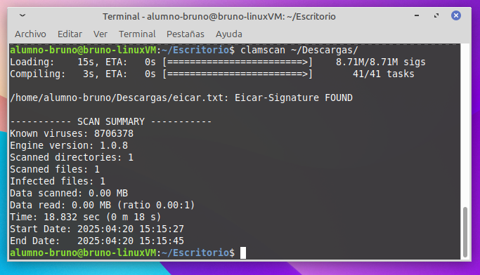
xxxxxxxxxx11/home/usuario/Descargas/eicar.txt: Eicar-Test-Signature FOUNDWarning
Recuerda que ClamAV no va a hacer nada, tan solo nos avisa de que ha detectado un virus. Nosotros deberíamos borrar tomar las medidas pertinentes.
No lo borres, déjalo un ratito más con nosotros 😷.
Si prefieres no usar la terminal, puedes instalar ClamTk, una interfaz gráfica que permite usar ClamAV de forma visual.
¿Qué es ClamTk?
Es una herramienta ligera que añade botones y ventanas a ClamAV
Permite hacer análisis de archivos y carpetas desde un explorador gráfico
Se instala por separado, ya que ClamAV funciona por consola
¿Cómo se instala?
xxxxxxxxxx11sudo apt install clamtkDespués de instalarlo, puedes buscar “ClamTk” en el menú de aplicaciones y abrirlo.
Desde ahí podrás:
Seleccionar carpetas o archivos para analizar
Revisar los resultados
Volver a analizar el archivo eicar.txt si todavía lo tienes en Descargas
Note
Esta herramienta no añade análisis en tiempo real, pero es útil si prefieres no trabajar con comandos.
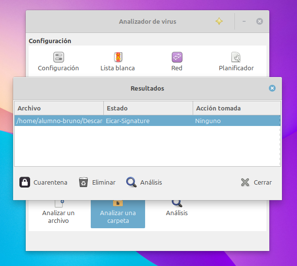
Important
Si ya sabes lo que quieres instalar, podrías haber añadido todos los paquetes de golpe con un solo comando:
xxxxxxxxxx11sudo apt install clamav clamtk clamav-daemonEn este caso lo hicimos por pasos para comprender mejor cómo ampliar un programa base con nuevas funcionalidades (interfaz gráfica, daemon en segundo plano, etc.).
En entornos más avanzados o servidores sí es habitual instalar todo junto desde el principio.
Un sistema seguro no es solo aquel que tiene antivirus o cortafuegos activados. También es aquel que se mantiene al día, se limpia periódicamente y se revisa con sentido común. Un sistema abandonado o lleno de basura puede ser igual de vulnerable que uno mal configurado.
En este apartado veremos algunas recomendaciones clave para el mantenimiento básico tanto en Windows como en Linux.
Mantener el sistema actualizado
Usa Windows Update regularmente para aplicar parches de seguridad y mejoras.
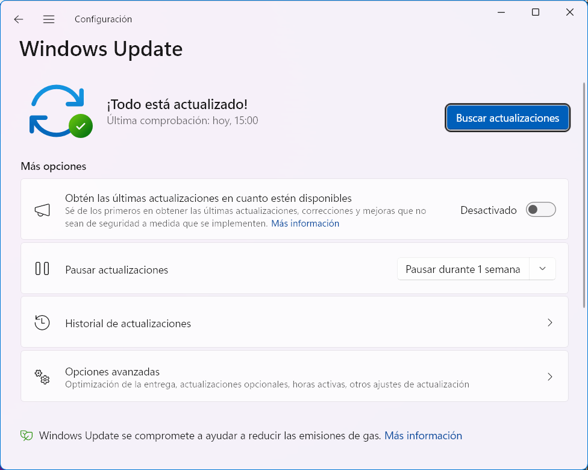
Revisar las aplicaciones de inicio
Evita que se acumulen programas innecesarios en el arranque.
Usa el Administrador de tareas > pestaña Aplicaciones de arranque.
Note
Ya vimos cómo revisar y desactivar aplicaciones al inicio en el punto 3.
Eliminar programas que no se usan
Desde Configuración > Aplicaciones, desinstala lo que no sea necesario.
Liberar espacio
Usa la herramienta de Liberador de espacio en disco o Configuración > Almacenamiento.
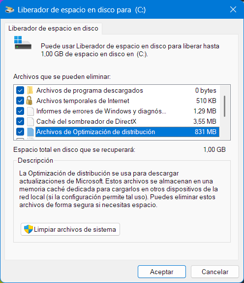
Revisar errores del sistema
Ejecuta periódicamente sfc /scannow en PowerShell para comprobar archivos del sistema.
xxxxxxxxxx11sfc /scannowEjecuta la herramienta de diagnóstico avanzada que analiza el SO en busca de corrupción en sus archivos.
xxxxxxxxxx51# Escanea sin reparar2DISM.exe /Online /Cleanup-image /Scanhealth3
4# El siguiente paso intenta reparar los daños detectados5DISM.exe /Online /Cleanup-image /Restorehealth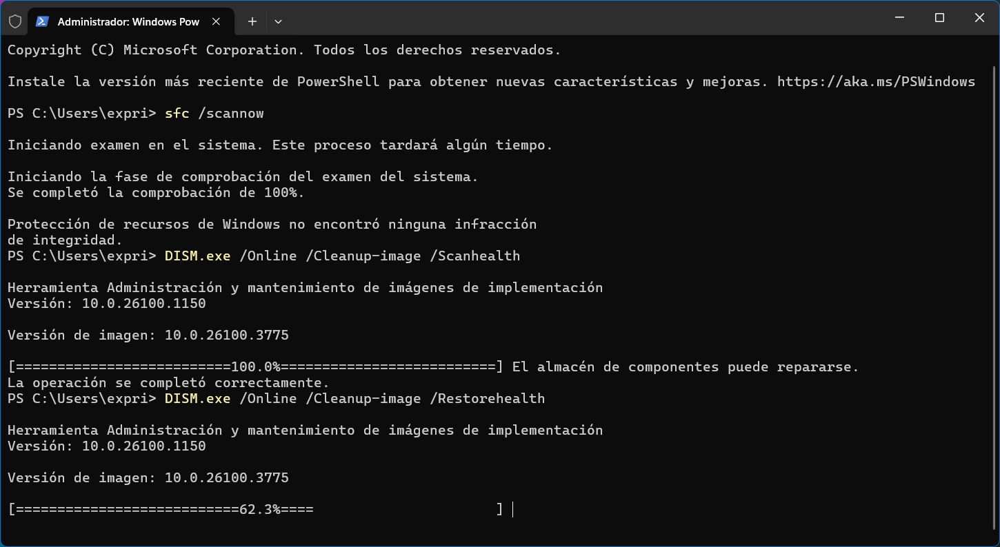
Hacer copias de seguridad
Usa herramientas como Historial de archivos o sistemas externos de copia.
Note
Veremos en profundidad el tema de copias de seguridad más adelante en el curso, con ejemplos prácticos y herramientas específicas.
Actualizar el sistema regularmente
Ejecuta sudo apt update && sudo apt upgrade o usa el gestor gráfico de actualizaciones.
xxxxxxxxxx11sudo apt update && sudo apt upgrade¿Qué hace exactamente?
sudo apt update: actualiza la lista de paquetes disponibles. Es decir, consulta en los repositorios si hay nuevas versiones de los programas o componentes del sistema.
sudo apt upgrade: instala las actualizaciones disponibles para los programas que ya tienes en tu sistema, pero sin eliminar ni instalar paquetes nuevos que puedan causar cambios importantes.
El && une los dos comandos: primero se actualiza la lista, y solo si eso termina correctamente, se lanzan las actualizaciones.
Tip
Es recomendable ejecutar este comando al menos una vez por semana, o antes de instalar paquetes nuevos, para evitar conflictos o errores por versiones antiguas.
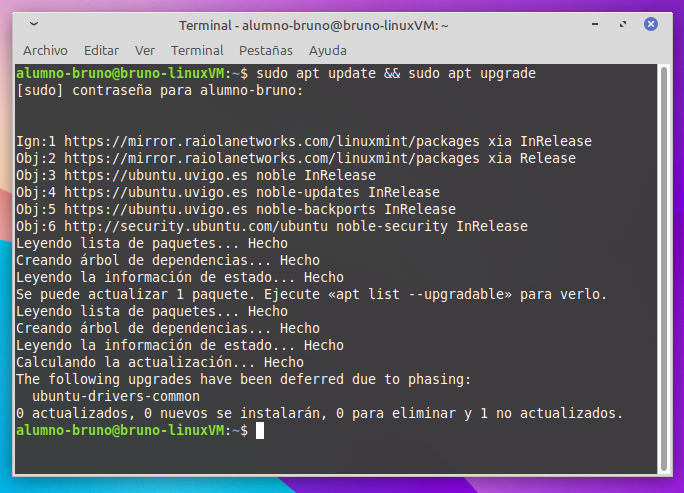
Important
A diferencia de Windows, en Linux el comando sudo apt update no solo actualiza el sistema operativo, sino también todas las aplicaciones de terceros instaladas desde los repositorios.
Es decir, actualiza el sistema completo (navegadores, utilidades, herramientas de red, etc.) en un solo paso, sin necesidad de buscar actualizaciones aplicación por aplicación.
Eliminar paquetes innecesarios
Usa sudo apt remove para desinstalar programas que ya no necesitas.
Puedes limpiar dependencias huérfanas con sudo apt autoremove.
Note
Ya explicamos cómo instalar y desinstalar programas en el punto 7.
Verificar el espacio en disco
En Linux es importante comprobar periódicamente cuánto espacio está usando el sistema o si una carpeta concreta está creciendo demasiado.
💾 Ver el uso general del disco:
Comando para mostrar todas las particiones montadas con su uso:
xxxxxxxxxx11df -hEste comando muestra el tamaño total, el espacio usado, el espacio libre y el punto de montaje. La opción -h significa "human-readable", es decir, en MB/GB.
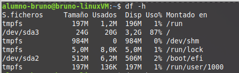
📂 Ver cuánto ocupa cada carpeta del directorio actual:
Comando para listar el tamaño de todas las carpetas (sin entrar recursivamente en cada una):
xxxxxxxxxx11du -sh *Esto te permite ver qué carpetas ocupan más espacio dentro de la ruta en la que estás. Muy útil para detectar carpetas “gigantes”.
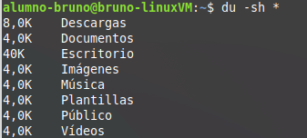
Tip
Al usar * al final del comando, le decimos que muestre todas las carpetas. Si queremos una carpeta concreta, le indicamos la carpeta concreta. Por ejemplo:
xxxxxxxxxx11du -sh Descargas
Limpiar la caché de paquetes
Cada vez que instalas o actualizas un programa con apt, el sistema descarga un archivo .deb y lo guarda temporalmente en una carpeta llamada caché de paquetes. Con el tiempo, esto puede ocupar bastante espacio, especialmente si haces muchas actualizaciones.
Para liberar ese espacio, puedes usar:
xxxxxxxxxx11sudo apt cleanEste comando borra todos los archivos .deb almacenados en caché en /var/cache/apt/archives. No afecta a los programas ya instalados: solo elimina los instaladores que ya no se necesitan.
Tip
Es completamente seguro y no afecta al funcionamiento del sistema. Se recomienda hacerlo de vez en cuando si el espacio en disco es limitado.
Revisar procesos y servicios activos
Usa htop o el Gestor de tareas para ver qué se está ejecutando.
Usa systemctl list-units --type=service para ver servicios activos.
Note
Ya trabajamos con servicios y procesos en el punto 6.
Tip
Una característica muy útil de algunas distribuciones como Linux Mint o Ubuntu es que, cuando intentas usar un comando que no está instalado, el sistema puede sugerirte automáticamente cómo instalarlo.
Por ejemplo, si escribes htop y no está instalado, puede aparecer este mensaje:
xxxxxxxxxx21No se ha encontrado la orden «htop», pero se puede instalar con:2sudo apt install htop
Esto te ayuda a descubrir herramientas nuevas y a instalarlas fácilmente sin necesidad de buscarlas por internet.
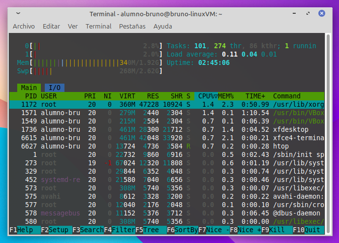
Realizar copias de seguridad
Aunque no viene activado por defecto, puedes usar herramientas como Timeshift o soluciones externas.
Note
Veremos en profundidad el tema de copias de seguridad más adelante en el curso, con ejemplos prácticos y herramientas específicas.
| Comando | Descripción breve |
|---|---|
sudo apt update | Consulta los repositorios por nuevas versiones |
sudo apt upgrade | Instala las actualizaciones encontradas |
sudo apt remove nombre | Desinstala un programa del sistema |
sudo apt autoremove | Borra librerías no utilizadas |
sudo apt clean | Libera espacio borrando paquetes ya descargados |
df -h | Muestra espacio total, usado y libre por partición |
du -sh * | Muestra el tamaño de todas las carpetas de la ruta actual |
du -sh ~/Descargas | Tamaño total de la carpeta de Descargas |
En este tema hemos visto que un sistema operativo no solo es la base para que todo funcione, sino también el primer eslabón en la cadena de seguridad.
Hemos aprendido a configurarlo, protegerlo, mantenerlo limpio y entender cómo nos ayuda a evitar amenazas incluso antes de instalar herramientas externas.
🔐 Windows y Linux ofrecen diferentes caminos, pero el objetivo es el mismo: tener el control de lo que pasa en tu sistema.
A partir de ahora aplicaremos todos estos conocimientos en situaciones más concretas y avanzadas.
¡Así que prepárate, porque ya dominas lo más importante: la base sobre la que se apoya todo lo demás! 💪
🧠 Pregunta 1
¿Cuál de estas acciones no mejora la seguridad del sistema operativo?
a) Mantenerlo actualizado
b) Usar una cuenta con permisos de administrador para todo
c) Revisar qué aplicaciones se inician al arrancar el sistema
d) Eliminar programas que ya no se usan
🔍 Pregunta 2
En Linux, ¿qué comando muestra el uso del disco en formato legible?
a) ls -lh
b) df -h
c) du -lh
d) free -m
🔧 Pregunta 3
¿Para qué sirve el comando sudo apt autoremove?
a) Actualiza los paquetes del sistema
b) Limpia la caché de paquetes descargados
c) Elimina programas antiguos
d) Elimina dependencias que ya no se usan
🔐 Pregunta 4
¿Cuál de estas afirmaciones sobre sudo apt update && sudo apt upgrade es correcta?
a) Solo actualiza el sistema operativo
b) Solo actualiza las aplicaciones del usuario
c) Actualiza el sistema y todas las aplicaciones instaladas desde repositorios
d) Elimina los programas que no se usan
🗂️ Pregunta 5
En Linux Mint XFCE, ¿cómo se llama la herramienta gráfica para gestionar el cortafuegos?
a) UFW
b) ClamAV
c) GUFW
d) FirewallD
🖥️ Pregunta 6
¿Qué aplicación de Windows permite ver qué procesos están activos y cuánto consumen?
a) Monitor del sistema
b) Visor de eventos
c) Seguridad de Windows
d) Administrador de tareas
📦 Pregunta 7
¿Cuál es el comando para desinstalar un paquete en Linux?
a) sudo apt remove
b) sudo apt delete
c) apt uninstall
d) sudo rm package
🛡️ Pregunta 8
¿Cuál es el nombre del antivirus bajo demanda que se puede usar en Linux?
a) Bitdefender
b) ClamAV
c) Avast
d) Kaspersky
📁 Pregunta 9
¿Qué comando sirve para ver cuánto ocupa una carpeta concreta?
a) df -h
b) ls -la
c) du -sh
d) top
💬 Pregunta 10
¿Qué hace el comando sudo apt clean?
a) Desinstala programas antiguos
b) Borra toda la caché de paquetes descargados
c) Reinicia la red
d) Limpia el sistema de errores
1. b) Usar una cuenta con permisos de administrador para todo
2. b) df -h
3. d) Elimina dependencias que ya no se usan
4. c) Actualiza el sistema y todas las aplicaciones instaladas desde repositorios
5. c) GUFW
6. d) Administrador de tareas
7. a) sudo apt remove
8. b) ClamAV
9. c) du -sh
10. b) Borra toda la caché de paquetes descargados